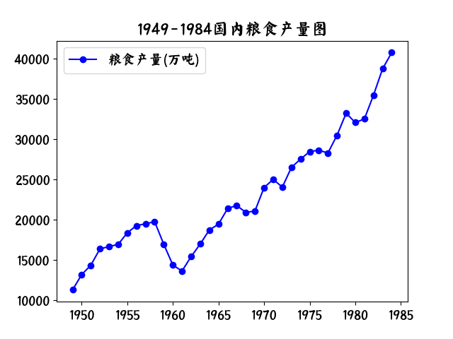
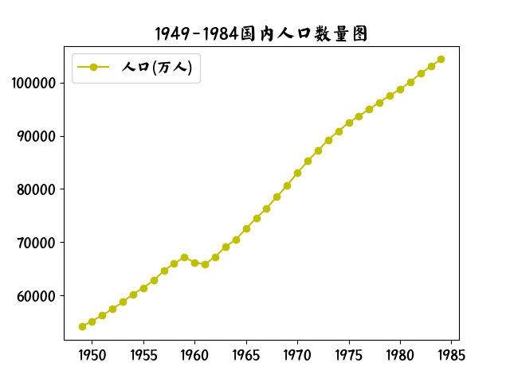
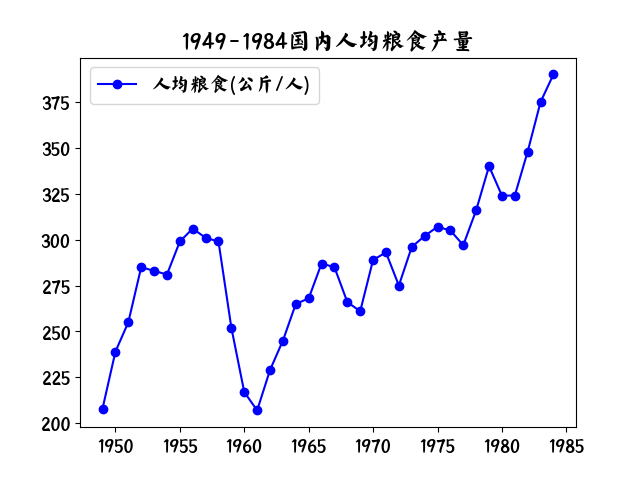

若干重大决策与事件回顾
薄一波
改革的路径依赖？（事件发展的前因后果）；内战，抗日，解放等战争时期形成的运动式领导方式的影响几何？领导干部的知识理论文化水平的影响？国际局势变化的国内影响？如何协调央地关系？权利划分？利益分配？建立什么样的科教，文化，税收，财政，组织，国家制度？如何降低制度成本？如何协调领袖与组织的关系？为什么实践和理论会有如此大的反差？实在令人深思。- 党政如何划分权利与责任？
上部
- 《晋察冀日报》与晋冀鲁豫的《人民日报》合并，定名《人民日报》
- 广大劳动群众；现在是人民民主专政，不是无产阶级专政
- 接受工作要“原封原样，原封不动”。主要接收官僚资本，对民族工商业要好好保护。
- 党的高级干部要做到：不做寿，不祝酒，不以人名作地名，活人不上舞台。
- 我们党诞生在城市，但后来长期生活，战斗在乡村
- 严于律己，谦虚谨慎
- 一场大革命除必须破坏的以外，应尽量多保存一些有用的东西； 破坏旧世界与建设新世界
- 对国民党的政府机构原则上是打乱，解散。对原有的经济组织则和企业机构是接受，改造
- 旧有的各种税收，原则上照旧征收
- 经过调查研究，深思熟慮，订出办法步骤，并经过宣传，才开始改革
- 看问题不能目光短浅，要看到政治影响
- 自己动手不要秘书代劳 {报告制度}
- {谦虚谨慎，不骄不躁，艰苦奋斗}
- 列宁讲党必须有铁的纪律
- 城乡必须兼顾，决不可丢掉乡村，只顾城市
- 抗美援朝,土地改革, 镇压反革命三大运动相互结合
- 志愿军牺牲和负伤的达36万余人牺牲的团以上干部达200多人
- 过渡阶段充满着矛盾和斗争
- 只要国家政权和主要经济命脉掌握在无产阶级手中,国家资本主义也同样不可怕,只会对无产阶级有利.__列宁全集
- 任何一个新的社会制度的创立和巩固没,都不是凭空的,都必须利用先前社会的创造的条件,作为自己生存,发展和壮大的基础.
- 打天下也并不容易,治天下也不是难的没有办法
- 恶性通货膨胀使投机活动猖獗,正常的生产经营活动难以进行
- 孤立的看问题,就经济论经济,路子不会宽广 ？
- 经济困难的最终解决离不开生产的回复和发展
- 过去的那一套经验也应付不了现在的局面
- 新比:旧币=1:10000 (1955)
- 谁掌握了市场,谁就在经济上掌握了领导权
- 政治是经济的集中表现
- 不算财经账的财经干部不是好的财经干部
- 全局不稳,即使偏安一隅也是不可能持久的
- 经济工作不能撒胡椒面,而要集中必要的财力物力解决重大问题
- 共产党员必须是遵守国家法令的模范
- 如果顾虑太多就什么事情也办不成了
- 大抵一件事利大于弊就不错了
- 发挥中央和地方两个积极性
- 对资产阶级不斗不行,斗过头也不行
- 金融物价不稳定一向是中国经济的大祸害
- 世上没有点金术,也没有摇钱树,路只有两条印钞票和增税
- 温和通货膨胀有益论?
- 新民主主义时期:公私兼顾,劳资两利,城乡互助,内外交流
- 工农业产品剪刀差扩大矛盾?
- 防止斗争扩大化? ·民主生活->批评与自我批评
- 民主,让人民来监督政府,政府才不敢松懈
- 长期的斗争,学会在商品经济的大海中游泳
- 批发零售差价;地区差价;
- 反对强迫命令和急性病__张闻天
- 社会主义不是绝对平均主义
- 急于求成,急躁冒进,受到客观规律的惩罚
- 周总理一向办事勤敏精细
- 桌面上的斗争:
- 无政府,无组织,无纪律的错误倾向
- 不要骄傲,要学习,不能看不起人,永远是学习的态度
- 有些事一时说不清的,留待历史去评判好了---朱德
- 错误都会犯,改正了就好,以后再犯,当然还是要批评的
- 统购统销:支持城市工业化发展,出口换取原材料
- 从发展原材料,能源,机械制造等重工业入手
- 施仁政
- 大小主次之分,轻重缓急之分;眼前利益不能损害长远利益;局部利益不能损害整体利益;生活消费不能冲击国家建设
- 统一和调整,只此两事,天下大定
- 平时不批评,总有一天会来个大批评
- 照抄照搬就是教条主义
- 一要建设,二要吃饭,分光用光,国家没有希望
- 五马进京,一马当先:
- 西北局:习仲勋;
- 西南局:邓小平
- 东北局:高岗
- 华东局:饶漱石
- 中南局:邓子恢
- 重视党的团结,消除山头;不搞宗派;团结统一是党的生命
- 共产党员必须具有的谦逊态度和自我批评精神
- 共产党人不可追求个人的权力和地位
- 要立志做大事,不要立志做大官
- 共产党人是要解放全人类的
- 手莫伸,伸手必被捉——陈毅
- 自愿原则因地制宜,广泛探索, 百花齐放,优胜劣汰
- 领导如何了解真实情况?
- 据实汇报,有喜报喜,有忧报忧
- 党八股:不生动,不形象,使人看了头疼,也不讲究文法和修辞,爱好一种半文言半白话的题材,有时废话连篇,又是又尽量简古,好像他们立志要让读者受苦似的
- 机会主义:没有定见,只会随机应变的政党和政客
- 坚持真理,修正错误
- 贫穷不是社会主义,一部分人富裕,多数人贫穷也不是社会主义
- 表面上相敬如宾,实际上貌合神离
- 要求过急，工作过粗，改变过快，形式过于单一
- 《入社自愿，退社自由，经济发展，自负盈亏》
- 富一家，倒四邻 {认识来源于实践}
- 对国情的认识是一个长期的，不断发展的过程
- 《苏联社会主义经济问题》前八年照抄外国经验；56年提出十大关系，开始找到自己的一条适合中国的路线
- 国防工业建设规模过大，要求过急，引起整个工业建设全面紧张，这是最尖锐的一个问题
- 条条：中央各部门直接管辖；块块：行政区划管理
-
主要内容:
- 稳定物价:1949,7-12
- 统一财政:1950.3
- 土改,富农
- 三反:反贪污,反浪费,反官僚主义:1951
- 统购统销:1953-1985:城镇人口吃饭问题:粮票布票
- 三大改造,个体农业，资本主义工商业，个体手工业
- 《论十大关系》：
- 工业和农业、
- 沿海和内地、
- 中央和地方：分权？地方要不要立法权？扩大地方自主权的目的是为了克服中央权利过分集中带来的弊病。“1958年，权力大下放”
- 国家，集体和个人、
- 国防建设和经济建设
- 艺术百花齐放，学术百家争鸣：尊重知识，尊重人才，依靠科学技术进步推动经济和社会发展
-
一五计划:实际施工的大中型项目:921个
- 援建国家包括:苏联,德国,捷克斯洛伐克,波兰,匈牙利,罗马尼亚,保加利亚
- 领域:军事工业,航空,电子,兵器,航天,船舶,冶金,钢铁,有色金属,化学,机械,能源,煤炭,电力,石油,轻工业,医药工业.
- ”相当长的时间“多长？
- 要打破迷信，不管是中国迷信，还是外国迷信；我们的后代也要打破对我们的迷信。
- 一切国家的先进经验都要学
- 分析国国际形势，调整内外政策
- 建国后第一个五年军事费用支出站国家预算支出的24%
- 社会主义制度的优越性如何体现？生产力的提高？
- 特别重要的事情是，不割脑袋的办法可以避免犯错误。斯大林不知道是怎样想得，抓到一个就杀一个，结果犯了大错误。错误与反革命界限不分，错杀了很多人，我们要记住这个教训
- 即反保守，又反冒进，综合平衡稳中前进，
- 国民收入分配是关系经济发展全局的大问题
- 《六法全书》：法制书
- 硬逼木匠去种田；天下可以马背上得之，不可以马背上治之
- 坚持民主集中制，反对突出个人
下部
十年经验与教训
- 《关于建国以来党的若干历史问题的决议》1981 见后文
- 全面建设社会主义的十年：1956-1966
- 坚持把正确处理人民内部矛盾作为党和国家政治生活中的主题
- 坚持真理，修正错误。知无不言，言无不尽。言者无罪，闻者足戒；有则改之，无则加勉。残酷斗争无情打击？
- 经济发展必须按客观规律办事，不能急于求成，尽量避免盲目性。
- 农业是国民经济的基础
- 超过劳动者个人需要的农业劳动生产率，是一切社会的基础，并且首先是资本主义生产的基础；农业劳动是其他一切劳动得以独立存在的自然基础和前提
- 农业问题，农村问题，农民问题始终是关系我国社会主义现代化建设能否顺利进行和获得成功的中心问题，任何时候削弱农业和农村经济，不能正确处理农民问题都会犯极大的历史性错误。
- 经济决策不能盲目跟着政治风向跑
- 1960年夏，苏联单方面取消中苏国防新技术协定。
- 经济决策最忌时而大上，时而大下的折腾
- 清醒的认识我国社会发展所处的历史阶段，是制定正确政策的前提
- 社会主义的优越性就体现在他的生产力要比资本主义发展的更高一些，更快一些。
- 全民所有制 && 集体所有制？
- 只有当生产关系成为生产力发展的桎梏的时候，才去变革生产关系。
- 严格划清平均主义和社会主义的界限
- 农村里是小农经济的汪洋大海，均贫富，等贵贱
- 如果长期内老是一部分人富，而多数人富不起来，那就不是社会主义了
- 党的各级领导人保持普通劳动者的面貌，党员和群众同甘共苦，是纠正错误战胜困能的重要一环
- 1961,1962精简一千多万职工 ，减少两千万城镇人口，顺利实现
- 干部参加劳动制度，蹲点制度。。干群关系：干部同群众同甘共苦，风里来，雨里去。
- 逢人直说三分话，未可全拋一片心；一个人自己想的是真的，两个人讲的半真半假；三个人一起讲的全是假的——七千人大会。20年的曲折告诉我们：坚持实事求是的思想认识路线是健全党和国家政治生活的重要一环；人治&&法治？
- 个人崇拜：一句顶一万句！成都会议：“对主席就是要迷信”
- 制度不好可以使好人无法充分做好事，甚至走向反面
- 尊重维护党章，宪法，法律；社会主义民主制度化，法制化。
- 研究历史，是为了吸取经验，教训。开辟未来的事业
- 1988-1993
几张图



关于建国以来党的若干历史问题的决议 1981
- 伟大的革命先行者孙中山先生1911年领导的辛亥革命，推翻了清王朝，结束了两千多年的帝制
- 1927年,蒋介石反共,六万多党员的党只剩下了一万多党员
- 第五次反围剿失败,红军从三十万人减到三万人左右，共产党员从三十万人减到四万人左右
- 抗日战争期间，党从1942年开始在全党进行整风
- 在党的周围结成广泛的统一战线，实现了我国历史上空前强大的政治团结
- 中国革命的胜利，在我国结束了极少数剥削者统治广大劳动人民的历史
- 新民主主义革命的胜利是无数先烈和全党同志、全国各族人民长期牺牲奋斗的结果。我们不应该把一切功劳归于革命的领袖们，但也不应该低估领袖们的重要作用
- 国家的社会主义工业化，是国家独立和富强的当然要求和必要条件
- 对资本主义工商业，我们创造了委托加工、计划订货、统购包销、委托经销代销、公私合营、全行业公私合营等一系列从低级到高级的国家资本主义的过渡形式
- 八大:强调要坚持民主集中制和集体领导制度，反对个人崇拜，发展党内民主和人民民主，加强党和群众的联系
- 历史再一次表明，我们的人民是伟大的人民，我们的党和社会主义制度具有伟大而顽强的生命力
- 国际共产主义运动史上由于没有正确解决领袖和党的关系问题而出现过的一些严重偏差
- 著作:《中国社会各阶级的分析》、《湖南农民运动考察报告》、《星星之火，可以燎原》、《〈共产党人〉发刊词》、《新民主主义论》、《论联合政府》、《目前形势和我们的任务》《在中国共产党第七届中央委员会第二次全体会议上的报告》、《论人民民主专政》、《论十大关系》、《关于正确处理人民内部矛盾的问题》、《在扩大的中央工作会议上的讲话》《关于纠正党内的错误思想》、《中国革命战争的战略问题》、《抗日游击战争的战略问题》、《论持久战》、《战争和战略问题》《目前抗日统一战线中的策略问题》、《论政策》、《关于打退第二次反共高潮的总结》、《关于目前党的政策中的几个重要问题》、《不要四面出击》、《关于帝国主义和一切反动派是不是真老虎的问题》《青年运动的方向》、《大量吸收知识分子》、《在延安文艺座谈会上的讲话》、《纪念白求恩》、《为人民服务》、《愚公移山》反对自由主义》、《中国共产党在民族战争中的地位》、《改造我们的学习》、《整顿党的作风》、《反对党八股》、《学习和时局》、《关于健全党委制》、《党委会的工作方法》《反对本本主义》、《实践论》、《矛盾论》、《〈农村调查〉的序言和跋》、《关于领导方法的若干问题》、《人的正确思想是从那里来的？》
- 主观主义是共产党的大敌，是党性不纯的一种表现
- 实事求是,群众路线,独立自主
- 我们还要实现台湾回归祖国，完成祖国统一的大业
- 既反对急于求成，也反对消极情绪既要反对把阶级斗争扩大化的观点，又要反对认为阶级斗争已经熄灭的观点,逐步建设高度民主的社会主义政治制度，是社会主义革命的根本任务之一,禁止任何形式的个人崇拜。一定要维护党的领袖人物的威信，同时保证他们的活动处于党和人民的监督之下
- 1945年党的六届七中全会所一致通过的《关于若干历史问题的决议》
建国后的大事年表
| 事件 |
时间 |
地点 |
备注 |
| 开国大典 |
1949.10.1 |
北京 |
|
| 中苏建交 |
1949.10.3 |
|
|
| 中国人民大学成立 |
1949.12.16 |
|
|
| 中苏友好互助同盟条约 |
1950.2.14 |
|
签订 |
| 中华人民共和国婚姻法 |
1950.5.1 |
|
公布施行 |
| 中华人民共和国土地改革法 |
1950.6.30 |
|
|
| 抗美援朝 |
1950.10.19 |
鸭绿江 |
到达朝鲜前线 |
| 西藏和平解放 |
1951.5.23 |
|
|
| 三反运动 |
1951.12 |
|
在全国展开 |
| 公审刘青山，张子善 |
1952.2.10 |
保定 |
同日枪决 |
| 全国高校院系调整 |
1952.6-9 |
|
|
| 一五计划 |
1953-1957 |
|
|
| 朝鲜停战协定 |
1953.7.27 |
开城板门店 |
|
| 农业合作化运动 |
1953.12.16 |
|
55年兴起 |
| 五四 宪法 |
1954.9.20 |
|
颁布 |
| 川藏.青藏公路建成 |
1954.12 |
|
|
| 三军大授衔 |
1955.9.27 |
|
十大元帅，十大将军 |
| 双百方针 |
1956.4 |
|
|
| 整风运动 |
1957.4 |
|
|
| 美国导弹部队驻台湾 |
1957.5 |
|
|
| 新人口论 |
1957.7.5 |
|
马寅初，人民日报全文发表 |
| 大跃进 |
1957.11.13 |
人民日报 |
提出口号（58.5-60.上半年） |
| 大炼钢 |
1957.11-1958.12 |
|
|
| 志愿军全部撤回国 |
1958 |
|
|
| 人民公社化运动 |
1958.8 |
|
|
| 特赦：国民党，伪满，反革命，普通刑犯 |
1959.9.17 |
|
刘少奇签 特赦令，60,63,64,66年份也有特赦 |
| 发现大庆油田 |
1959.9.26 |
黑龙江 |
|
| 召回全部苏联专家 |
1960.7.16 |
|
外交照会 |
| 中印边境自卫反击战 |
1962.10.20 |
|
|
| 向雷锋同志学习 |
1963.2 |
|
毛在《中国青年》题词 |
| 中国第一颗原子弹爆炸成功 |
1964.10.16 |
|
|
| 文革 |
1966.8.5-1976.10 |
|
|
| 八个样板戏 |
1967.5.31 |
|
人民日报社论：革命文艺的优秀样板 |
| 知识青年上山下乡 |
1968.12 |
|
|
| 珍宝岛冲突 |
1969.3.2 |
|
|
| 东方红1号 |
1970,4,24 |
|
|
| 恢复联合国合法席位 |
1971.10.25 |
|
|
| 批林批孔 |
1974. |
|
|
| 尼克松访华 |
1972.2 |
|
|
| 白卷英雄 |
1973.6.30 |
辽宁 |
张铁生 |
| 秦始皇兵马俑 |
1974.3 |
陕西 |
发现时间 |
| 周恩来逝世 |
1976.1 |
|
|
| 天安门事件 |
1976.4 |
|
反对四人帮 |
| 朱德逝世 |
1976.7.6 |
|
|
| 毛泽东逝世 |
1976.9 |
|
|
| 恢复高考 |
1977.10.12 |
|
国务院宣布时间 |
| 对越自卫反击战 |
1979.2.17-3.16 |
|
|
华北局第一书记->中财委副主任,财政部长->国务院第三办公室,重工业口
->建委主任->经委主任->国务院副总理->
陈云
- 不惟上,不惟书,只唯实
- 党风问题是有关党的生死存亡的问题
- 大量提拔培养德才兼备的中青年干部是当务之急
- 解决群众切身问题的办法，必须在群众中去讨论，到群众中去找寻
- 所有正确的政策，都是根据对实际情况的科学分析而来的。”
- “我们应该用百分之九十以上的时间去弄清情况，用不到百分之十的时间来决定政策
- 有了成绩，头一个是人民的力量，第二是党的领导，第三才轮到个人
- 书:陈云文选
- 实事求是的指导思想，谨慎细致的工作方法
- 国乱思良将，家贫念贤妻
- 100万个自然村,26万个乡
- 任志强:在飞机上看书,两小时读30万字:每秒41个字
- 又要马儿跑,又要马儿不吃草
- 乡==公社
- 1983年12月1日取消布票
- 100斤小麦出多少斤面粉?80
- 人均一年500斤小麦?
- 工农业产品价格剪刀差
- 国家筹集工业化资金,形成原始积累的方法:掠夺殖民地,掠夺农民
- 虚心学习,勇于探索,实事求是
- 谦虚谨慎不骄不躁,艰苦奋斗
- 苦五，绝六，淡七，八活，九金，银十
- 历史的观点，发展的观点，实践的观点，联系的观点，辩证的观点
- “要有耐心，饭要一口一口吃，事要一件一件干 ”
- 立党为公，执政为民
- 什么是左？激进发展社会主义？
- 什么是右？资本主义？
- 建设性负债 && 消费型负债;负债型经济?
- 西部大开发->东北振兴->中部崛起->新农村建设->生态文明->乡村振兴;
- 五通:开发区标准
- 降息需要大约12个月的时间才能产生实质性的影响
结束